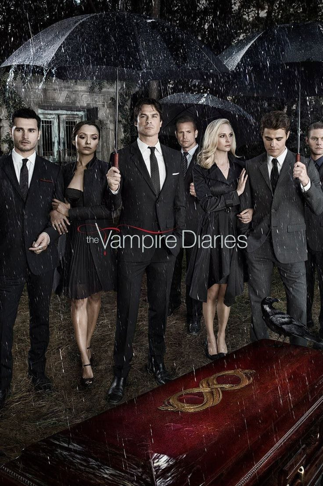
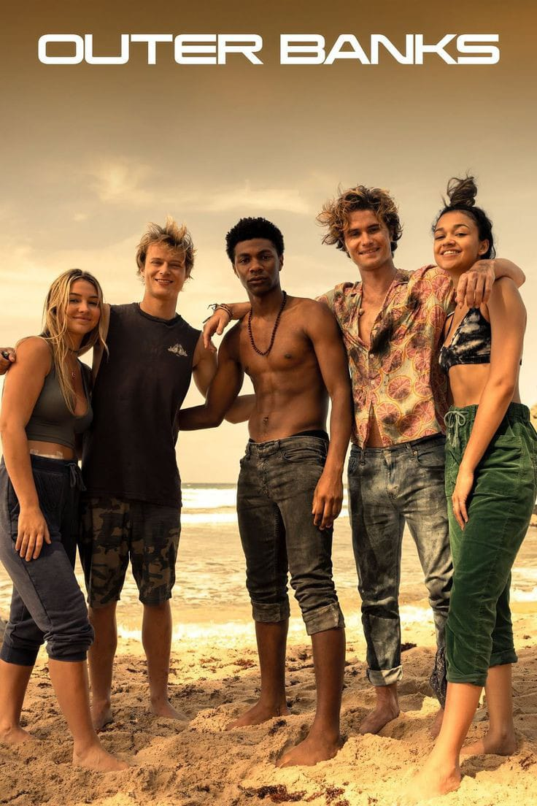
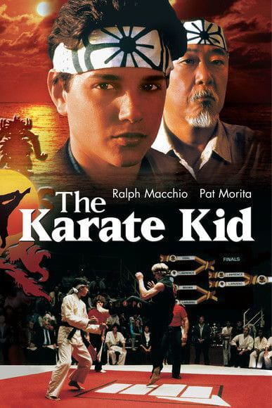
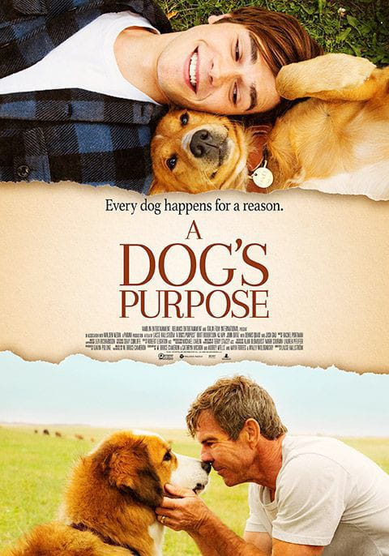
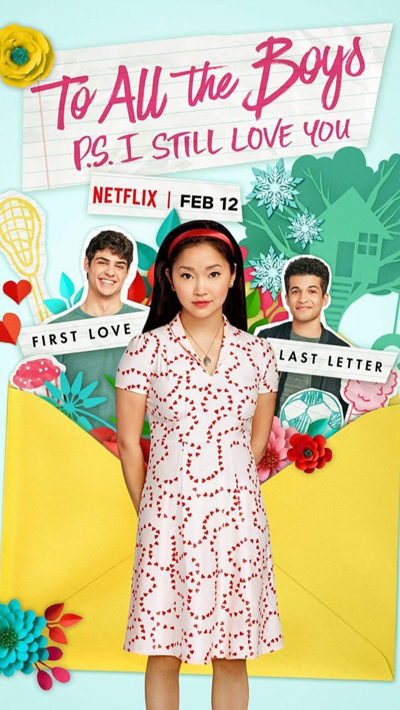

Friends é uma sitcom americana que estreou em 1994 e durou até 2004. Criada por David Crane e Marta Kauffman, a série segue seis amigos – Rachel, Monica, Ross, Chandler, Joey e Phoebe – enquanto navegam pela vida em Nova York. Conhecida por seu humor envolvente e momentos emocionantes, Friends se tornou um fenômeno cultural e continua a conquistar fãs através de serviços de streaming, sendo um símbolo duradouro da televisão dos anos 90 e 2000.

Diário de um Vampiro é uma série de televisão baseada nos livros de L.J. Smith, que foi ao ar de 2009 a 2017. A trama segue Elena Gilbert, uma adolescente que se envolve com dois irmãos vampiros, Stefan e Damon Salvatore. Ambientada na fictícia cidade de Mystic Falls, a série mistura romance, mistério e elementos sobrenaturais, explorando temas de amor, sacrifício e redenção. Com sua trama envolvente e personagens cativantes, Diário de um Vampiro se tornou um sucesso mundial e um marco na cultura pop.

Outer Banks é uma série de aventura e mistério da Netflix que estreou em 2020. A trama segue um grupo de adolescentes, conhecidos como Pogues, liderados por John B, que buscam um lendário tesouro na costa da Carolina do Norte. Enquanto enfrentam rivais, forças da lei e desafios pessoais, os Pogues descobrem segredos que mudam suas vidas para sempre. Com uma mistura de ação, drama e romance, Outer Banks conquistou uma base de fãs devotos e se destaca por suas reviravoltas emocionantes e paisagens deslumbrantes.

Karatê Kid é um clássico filme de artes marciais de 1984 que conta a história de Daniel LaRusso, um adolescente que aprende karatê com o Sr. Miyagi para se defender de valentões e competir em um torneio. Sob a orientação de Miyagi, Daniel não só domina as técnicas de luta, mas também aprende importantes lições de vida sobre honra, perseverança e respeito. Com suas cenas icônicas e mensagens inspiradoras, Karatê Kid se tornou um marco cultural e uma história atemporal de superação e amizade.

Sete Vidas de um Cachorro é um comovente filme de 2017 que segue a jornada de um cão chamado Bailey, que reencarna várias vezes ao longo de cinco décadas. Cada nova vida traz uma nova raça, novos donos e novas lições, mas o espírito e a alma de Bailey permanecem constantes. O filme explora temas de amor, lealdade e propósito, mostrando como os cães tocam e transformam as vidas das pessoas ao seu redor. Com uma narrativa tocante e momentos emocionantes, Sete Vidas de um Cachorro celebra a profunda conexão entre humanos e seus companheiros caninos.

Para Todos os Garotos que Já Amei é um filme de comédia romântica de 2018 baseado no livro de Jenny Han. A história segue Lara Jean Covey, uma adolescente cujas cartas de amor secretas são enviadas acidentalmente para seus antigos crushes. Isso leva a uma série de eventos inesperados, incluindo um romance falso com Peter Kavinsky, que acaba se transformando em algo real. Com uma narrativa charmosa e personagens cativantes, Para Todos os Garotos que Já Amei explora temas de amor, identidade e crescimento, tornando-se um sucesso entre jovens e adultos.